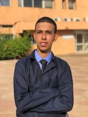

Mon CV
“Curieux, motivé et determiné” EL KIHEL Ayman

Adresse : 328 LOT ESSALAM El JadidaTél : 0642054262Email : aymanelkihel1@gmail.com
Formation et Diplôme
2020 - 2021 Etudes supérieures 2eme année Prepa MP
Rabat, Maroc----------Lycée Al-Zahrawi 2019 - 2020 Etudes supérieures 1ere année Prepa MPSI
Rabat, Maroc----------Lycée Al-Zahrawi 2018 - 2019 DIPLOME Baccalauréat SM
ElJadida, Maroc-------Lycée Ihsane
Compétences Techniques
Langages Maîtrisées :
Compétences :
Compétitivité pour compléter parfaitement la tache
Goût pour les chiffres et l’analyse
Rigueur, esprit d’initiative, curiosité
Compétences Linguistiques
Arabe: Trés bienAnglais: Trés bienFrancais: Bien
Centres D’Intérêt
Sport: Pratique du Taekwondo et du basketball en compétition depuis mes 10 ansLoisirs: Intérêts et passion concernant la culture japonaise « Animes/Mangas »
Edité par : Ayman EL KIHELDernière Mise à jour : 28/10/2021